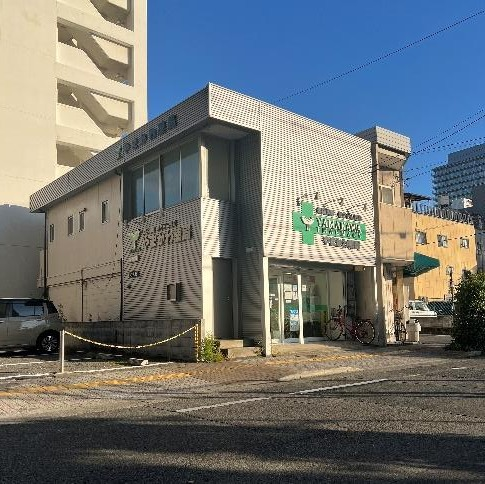
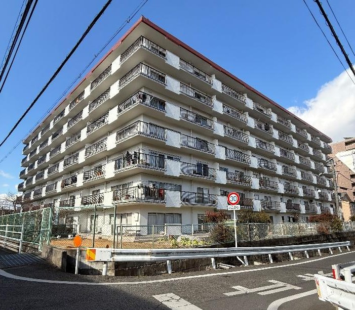

店舗兼住宅

岡山市北区中山下 店舗兼住宅
5,200万円（税込）
- 間取り1階 店舗／2階 1LDK
- 土地面積76.12㎡（約23.02坪）
- 建物面積110.15㎡（約33.32坪）
- 構造鉄骨造2階建
- 築年数1983年5月築
- 用途地域商業地域（建蔽率80％／容積率500％）
- 接道西側 幅員約8m 公道
- 最寄駅岡電清輝橋線「西大寺町筋駅」徒歩約3分
- 現況空店舗（元薬局）／引渡し時期は相談
- 取引態様媒介
岡山市・倉敷市・総社市を中心に、土地・中古戸建・マンションをご紹介しています。
気になる物件は、お気軽にお問い合わせください。

5,200万円（税込）

980万円（税込）
※ 掲載以外にも、未公開の物件情報がございます。「こんな物件を探している」というご希望もお気軽にご相談ください。